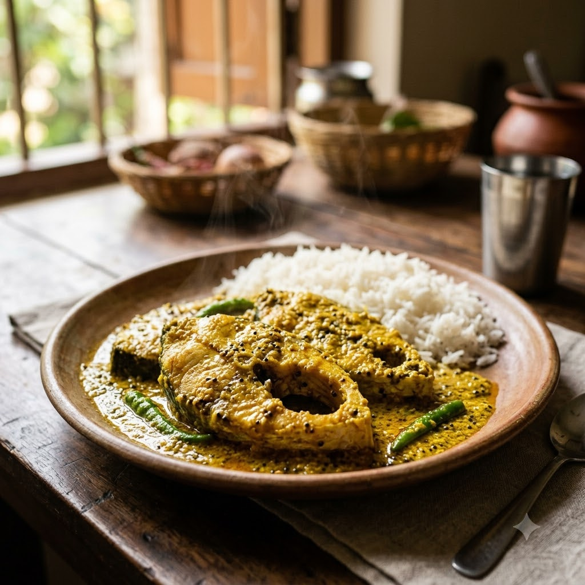

Bhapa Ilish (Steamed Hilsa in Mustard)

Bhapa Ilish (Steamed Hilsa in Mustard)
Chef Magic – Steam Auto 22 min — Serves 4
Gluten-Free • Bengali • High-Protein
🧑🍳 Chef Magic🍽 Serves 4
Prep ahead: Marinate the fish in the mustard paste, turmeric and salt for at least 20 minutes before steaming.
Ingredients
- 4 hilsa fish pieces (or any firm fish)
- 3 tbsp mustard seeds (rai), ground to a paste
- 2 tbsp grated coconut
- 2 green chillies (hari mirch), slit
- 1/2 tsp turmeric (haldi)
- 3 tbsp mustard oil (sarson ka tel)
- Salt to taste
Method
1Mix mustard paste, coconut, turmeric, mustard oil and salt; coat the fish pieces and marinate 20 minutes.
2Place the marinated fish in a steel bowl that fits the steamer tray, topped with slit green chillies.
3Steam in Chef Magic (100°C steam, paddle off) for 22 minutes until the fish is opaque and fully cooked through.
Tip: Traditionally served with plain steamed rice — the mustard gravy is the star of the dish.